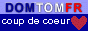

Quand je me suis connecté à l'Internet, j'ai voulu montrer à mon entourage qu'on pouvait trouver plein de choses sur le web.
— C'est quoi ton île natale ?
En tapotant La Réunion dans www.yahoo.com, je n'ai eu droit qu'aux réunions Tupperware et autres rassemblements d'étudiants étasuniens. Déception.
A peine quelques mois plus tard, je découvrais les différents fournisseurs d'accès de l'île et les sites perso qui en parlaient. Je décidai alors de faire une page de liens sur ma page ouêbe. Le web réunionnais foisonne et évolue sans cesse et ma modeste page a évolué pour devenir le site que vous avez sous les yeux.
Les sites présentés sont choisis en fonction de leur qualité et selon le thème abordé chaque mois qui change en fonction de l'actualité ou de mes humeurs. En général les auteurs sont informés du nouveau lien vers leur sites. À ce jour personne ne s'est opposé à un lien vers son site. Si vous trouvez quelque chose à en redire, vous pouvez écrire à l'auteur.
Certains sites ont hélas disparu avec le temps, Ils ont été suprimés mais la description qui les accompagne reste, même si elle se sent un peu seule à regret. Si vous découvrez d'autres liens cassés, ou pire, des sites remplacés par du spam, n'hésitez pas à me prévenir.
Aussi certains sites web se transforment ou changent d'adresse et je dois revoir mon jugement. D'autres apparaissent et sont pertinent pour remplacé les sites morts. Je prends donc parfois la peine de retoucher en italique mes anciennes présentations pour apporter des précisions et faire en sorte que mes anciens articles offrent une information à jour.
Chaque mois un nouvel article présente de nouveaux liens vers des sites réunionnais ou parlant de la Réunion. Vous pouvez vous abonner pour recevoir cet article par courrier électronique en donnant votre adresse mail ci-dessous:
Depuis sa sortie, ce site a reçu plusieures récompenses dont la mise en avant dans les sites ou annuaires réunionnais.

|  |
Plusieures lectures m'ont aidée a écrire les premiers articles de la rubrique découverte :
Les illustrations présentées sont soit l'oeuvre de l'auteur soit accompagnés de la source quand elle est connue (tous droits réservés). Sauf mention contraire, elle sont présentées avec la même licence que le site (cc-by-sa).
Les logiciels utilisés pour faire ce site sont des logiciels libres.
Je m'appelle Alix Guillard. et vous pouvez me contacter à propos de ce site.
Le site est hébergé sur un serveur personnel. Est-il besoin de rappeler que, bien évidement, le contenu de ce site n'engage pas la responsabilité de l'hébergeur mais uniquement celle de l'auteur.